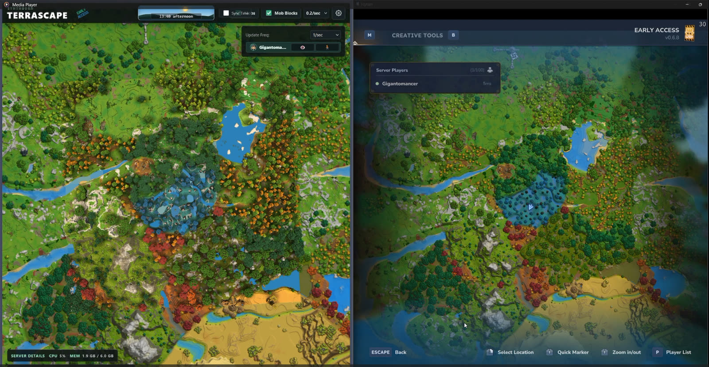
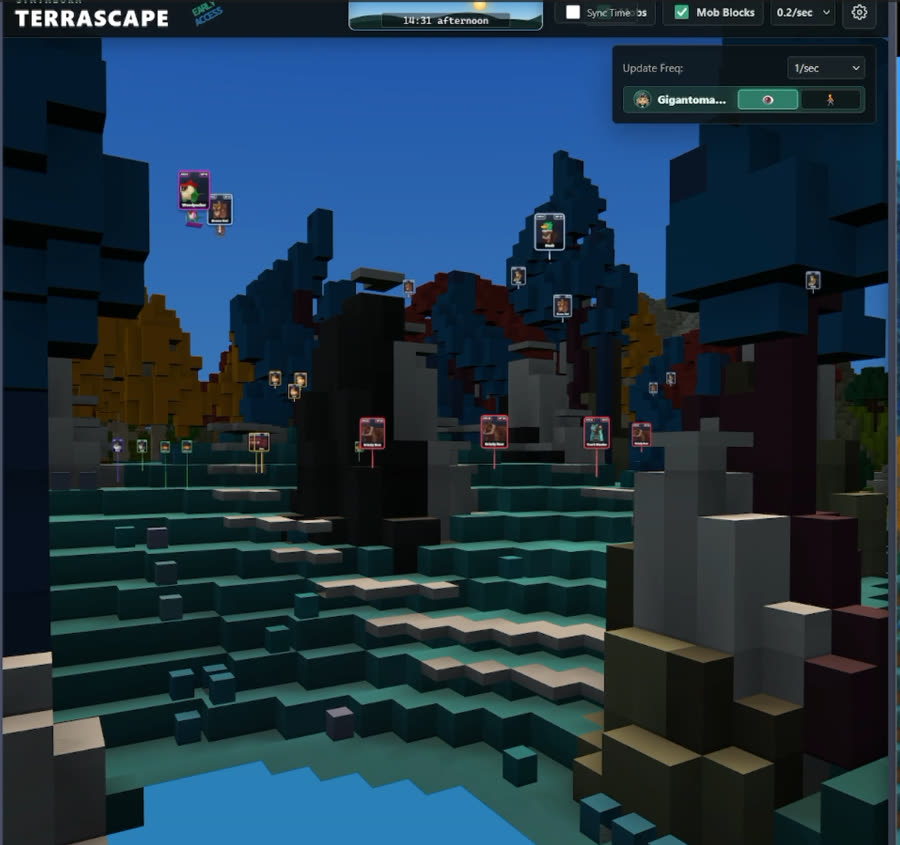

Using the map
Fly around your server's world in 3D, follow other players, and see what's moving, live.
- Open
- the link from your admin
- Move
- W A S D + mouse
- Settings
- gear, top right
- Chat
- T

Open the map
Use the address your server admin gives you, for example http://your-server:5960.
- If the map needs a personal link, it ends in a secret key:
…?key=abc123. - Opening it signs you in for this browser and removes the key from the address bar.
- When map access expired appears, ask an admin for a new link, or run
/terrascape maplinkin-game.
Treat a personal link like a password until it expires.
Get around
- W S
- Forward, back
- A D or Q E
- Strafe left, right
- Space R PgUp
- Up
- C PgDn
- Down
- Shift
- Hold to sprint
- Drag
- Look around
- Wheel
- Zoom in, out
- Esc
- Close the settings panel
Follow players
Each player in the Players list on the right has quick actions:
- Click the tile
- Flies the camera to that player.
- Eye view
- Shows the world through that player's eyes.
- Follow
- Trails the player from an angled overhead camera.
Settings panel
Open it with the gear, top right. A few controls stay in the title bar.
Title bar
- Sync Time
- Lights the map with the world's time instead of noon.
- Mobs, Mob Blocks
- Show creature markers and their headshot blocks.
- Update rate
- How often mob positions refresh.
World
- World
- Which world to view. Switching reloads terrain and markers.
- Voxel Mesh Distance
- How far 3D terrain loads around you, 0 to 12.
- Players, Auto, Bounds, Mob Blocks
- Player markers, automatic loading around the camera, chunk boundaries, and mob headshot blocks.
- Clear Browser Cache
- Removes terrain and tiles stored in this browser only.
Render
- Map Tiles
- The flat map under the terrain, with distance and loading sliders.
- Shade
- Soft shadow shading, with size and darkness, plus tree shade.
- Land motion
- Chunks rise into place as they load.
- Water
- Solid, Transparent, or Hidden.
- Cosmetic Blocks, Visual Detail
- How much decorative detail to load.
Experimental
- Fog
- Distance fog with near, far, strength, and haze sliders.
Read the map
- Sky ribbon, top center
- The world's current time and phase.
- Mob markers
- Cards above each creature show what it is and where it stands.
- Render Details, bottom right
- Status, loaded chunks, mob count, and your camera position. Click its header to collapse it.
Web chat console
A personal link also lets you use the console. Press T while the map has focus, type to chat, or start with
/ to run a command. Esc closes it.
The link doesn't make you an operator: commands use your own Hytale permissions. Visitors without a personal link don't get the console.
